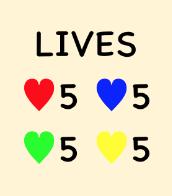

How to Play
- Each player decides their color.
- In the beginning, each player has one square.
- In each turn, the player can move their squares by swiping upwards, downwards, to the left or to the right.
- New squares will be given to each player at the starting point as the game goes on.
- This shows the number of moves after which a new square will appear.

- But if the starting point is occupied when a new square is due, that new square will not appear.
- All squares of each player move simultaneously by each swipe.
- White squares are “walls”, which block the movement of the square(s) that move(s) against them.
- The goal is to push opponents’ squares off the board.
- One square off the board, one life is lost.
- This shows the number of remaining lives of each player.

- When all lives are lost, the player is out of the game but all their remaining squares will stay and become gray, and remain moveable.
- The last man standing wins.